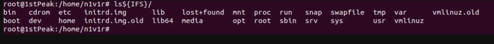

题目描述
csaw-嗯。。我刚建好了一个网站
题目解题
访问首页是三个链接 ，点击查看发现只有第二个和第三个有利用的可能，第二个为一些文本框
第三个为文件上传

这里文本框不知道有啥利用的（测试了半天）
于是看一下文件上传，首先上传php没反应，那上传普通的看看
测试几番发现只要是普通文件以及普通内容（即不包含木马什么的）那该文件内容是什么，页面就会显示什么

再者看了看url发现每个页面都有.pl后缀，百度发现这代表的是perl语言文件。但无奈菜鸡的我对此不懂，只能跟着佬的wp走了
首先抓包以方便测试，接上回，由于页面回显的就是文件所写的内容，因此某些大神就直接猜到了后台代码，这里先附上：
use strict;
use warnings;
use CGI;
my $cgi= CGI->new;
if ( $cgi->upload( 'file' ) ) {
my $file= $cgi->param( 'file' );
while ( <$file> ) { print "$_"; }
} 因为它会将上传的文件内容打印出来，所以猜测后台存在param()函数。param()函数会返回一个列表的文件但是只有第一个文件会被放入到下面的file变量中。
如果我们传入一个ARGV的文件，那么Perl会将传入的参数作为文件名读出来。对正常的上传文件进行修改,可以达到读取任意文件的目的。我们不猜代码，一步步来：
复制下面一遍代码，将filename删去，内容修改为ARGV，读取file.pl看看有什么（就猜它在/var/www/cgi-bin/下！）同时修改POST地址后的参数，作为要读取的文件，如图：

我么可以看到回显源码，果然验证了有param()函数的猜想。
利用bash读取一下主目录有啥文件
/cgi-bin/file.pl?/bin/bash%20-c%20ls${IFS}/|%20是空格，原始命令为：/cgi-bin/file.pl?/bin/bash -c ls${IFS}/|，为什么这么构造？后面有解释，先看效果：

看到flag，直接读取
疑点回顾
何为/bin/bash -c？
/bin/bash -c表示指定将命令转为一个完整命令执行，可以理解为执行linux命令
例：

何为${IFS}？
IFS是shell的特殊环境变量,是Linux下的内部区域分隔符。IFS中存储的值可以是空格、制表符、换行符或者其他自定义符号，可以在linux中使用${IFS}代替空格
例：

为什么要加|？
|：管道符左边命令的输出就会作为管道符右边命令的输入，这里为什么要加我也没搞明白，如有知道的朋友评论告诉我，谢谢。
举例一个常见的用法吧：cat后输出的内容，作为|后面内容的输入，这里是交给grep执行（此处在后面有解释）

注：经测试，${IFS}和/bin/bash联用时，不代表空格
自行做测试后发现${IFS}被识别为根目录符号，但是不知道为什么会这么识别，另外管道符|，我认识是需要将内容作为ARGV的输入打包，用于显示出查找的内容个。
漏洞分析
这里大佬告诉我们要利用@ARGV这个全局变量
首先要了解Perl中的ARGV全局特殊文件句柄
ARGV：遍历数组变量@ARGV中所有文件名的特殊文件句柄
@ARGV：是个全局数组特殊变量，传给脚本的命令行参数列表
Perl 会将 perl 命令行参数列表放入到数组 @ARGV 中，而默认情况下，这些命令行参数是 Perl 的数据输入源，也就是 说Perl 会依次将他们当作文件进行读取。这里可以参考C语言的argv{}数组，但不同的是，Perl语言的@ARGV中的第一个变量就是参数，而不是文件名。
Param() 函数会返回一个列表，但只有第一个文件会被放到变量中。
增加新的上传项，并删除filename，重大漏洞来了
删除filename后， $file的值（也就是文件名）变为了上传的内容，而输出的文件内容为空
通俗理解就是，新加入的文件内容替换了filename参数，传给了$file变量，
那如果我们利用@ARGV，将$file替换为@ARGV，其句柄就是命令行的参数，
如果给的参数是文件名，就可以输出第一个文件名的所有内容。
这里我们利用以上信息构造，加入新的文件列表，删除filename，文件内容写入ARGV
那么后端执行，就会把$file的值换为ARGV，也就成了上述test.pl的内容，会把从命令行里读取到的参数，当作文件路径找到并输出。
那么如何传入命令行参数呢？其实直接在url参数给出，就相当于命令行传参
那么，通过ARGV和url的参数就可以达到读取服务器上任意文件的目的构造远程执行代码
这里空格需要用url编码转义，否则不符合http头部格式，不能随便加空格的
Linux中，/bin/bash 是bash解释器，这句话当作文件名时，首先会去寻找/bin/bash并且输出，那就是执行了解释器的功能
bash -c 的语法是，后面跟的第一个参数会当作命令来被bash解析，第二，第三个参数被认为是bash的参数，而不是第一个参数（命令）的参数
举个例子：
bash -c ls /如果我们想要列出根目录需要 “ls /”时，需要加入$IFS
IFS是linux的特殊变量，默认值是space空格， $是取变量值，$IFS就代表空格
就可以执行“ls /“的命令了
若只有 /bin/bash%20-c%20ls$IFS/ 命令会发现没有返回信息
因为，/etc/passwd本身就是文件，后端代码找到并输出返回在html标签中
而/bin/bash 一旦被访问输出，就是bash运行环境，整个语句的输出结果在shell的缓冲区里，也就是后台服务器才能看到，并不会输出到html标签中。在linux里我们只需要管道操作就可以指定结果的存放位置了。
Tips：Perl open()函数会默认打开一个管道！
这里利用Perl open()函数打开的管道，进行劫持，通过“|“操作符，把内容引
入open()函数已经打开的管道中，就可以输出到html标签中啦！
以上都是佬的探索，只能说太秀了，我也懵逼了┭┮﹏┭┮